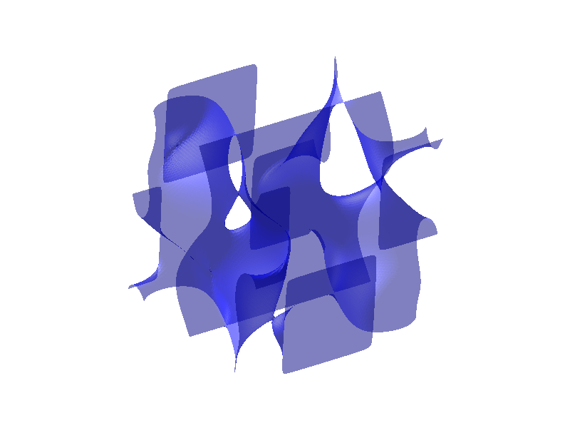

One demonstration.
Different robot bodies.
How can the same demonstrated skill be executed by robots with different kinematics?
Demonstrate once, execute on many: Kinematic intelligence for cross-robot skill transfer
Incoming CNRS researcher
I study how robots move—and how understanding their structure can help us plan motions, transfer skills, and design better machines.
01 / Research directions
Start with a question. Follow it into the geometry, the method, and the evidence.
Investigating how knowledge of a robot’s structure can help a demonstrated skill travel between different machines.
02Understanding inverse kinematics, singularities, and cuspidality to reason about a robot’s possible motions.
03Connecting the geometry of a mechanism with the capabilities and constraints of the resulting robot.
02 / Selected publications
A plain-language entry point, with the original research one click away.
Showing 2 selected publications.
How can the same demonstrated skill be executed by robots with different kinematics?
Demonstrate once, execute on many: Kinematic intelligence for cross-robot skill transfer
A robot can sometimes change its inverse-kinematic solution without crossing a singularity. What does that mean for planning and design?
Cuspidal Redundant Robots: Classification of Infinitely Many IKS of Special Classes of 7R Robots

03 / For curious students
Start with the geometry. Build an intuition. Then explore the questions that remain open.
Explore robotics teaching material, from mechanisms to kinematics and motion.
What makes a robot cuspidal? Work from the explanation to the original result.
Geometry, planning, or robot design: use the research themes to frame a conversation.
04 / About & collaboration
I’m Durgesh Salunkhe, an incoming CNRS researcher working on robot kinematics, motion planning, and mechanical design.
My research connects mathematical understanding with the physical structure of a robot. I’m interested in how that connection can inform both the way we move robots and the way we build them.